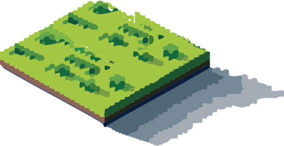
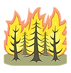
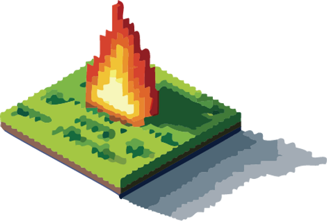
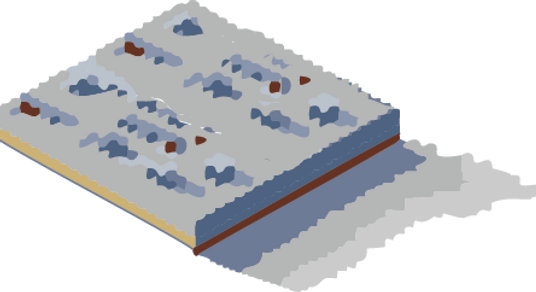

Pre-fire phase
Fire risk assessment
Fire weather forecasting




Fire risk assessment
Fire weather forecasting

Active fire detection
Fire radiative power estimation

Burn scar analysis
Emission estimation
Last updated : 2026/09/07
Yang, S., Kim, W., Sung, T., Lee, S., Lee, G., Xu, Z., & Im, J. (2026). Satellite-based wildfire monitoring across the fire lifecycle using artificial intelligence: Trends, challenges, and future directions. Korean Journal of Remote Sensing, 42(3), 315–341.
Kang, Y., Lee, S., Cho, D., & Im, J. (2026). Deep learning-based forecasting provides a pathway to closing wildfire information gaps in underserved regions. Communications Earth & Environment, 7, 684.
Sung, T., Yang, S., Kim, W., Kang, Y., Son, B., Lee, J., & Im, J. (2026). Enhancing satellite-based wildfire monitoring: An advanced framework for burn severity analysis with phenology-detrended indices. Remote Sensing of Environment, 343, 115488.
Rana, S. S., Lee, J., Kang, Y., & Im, J. (2026). Exploring the impacts of dual-polarized vegetation indices and U-shaped deep learning architectures on SAR-based burned area mapping. International Journal of Applied Earth Observation and Geoinformation, 146, 105141.
Kang, Y., Lee, J., & Im, J. (2026). Comprehensive global fire radiative power evaluation by minimizing detection bias with intercomparison and extended triple collocation analysis. Remote Sensing of Environment, 333, 115136.
Sung, T., Lee, G., Kim, D., Kim, W., Yang, S., & Im, J. (2025). Real-Time Wildfire Monitoring via Geostationary Satellite andArtificial Intelligence: Insights from the March 2025 South Korea Wildfires. Korean Journal of Remote Sensing, 41(3), 565-580.
Sung, T., Kang, Y., & Im, J. (2024). Enhancing Satellite-based Wildfire Monitoring: Advanced Contextual Model Using Environmental and Structural Information. IEEE Transactions on Geoscience and Remote Sensing.
Kang, Y., & Im, J. (2024). Mitigating underestimation of fire emissions from the Advanced Himawari Imager: A machine learning and multi-satellite ensemble approach. International Journal of Applied Earth Observation and Geoinformation, 128, 103784.
Kang, Y., Choi, H., Kim, Y., & Im, J. (2024). Understanding the Impact of Forest Fire on Ambient Air Quality. Journal of Korean Society for Atmospheric Environment, 40(1), 103-117.
Kang, Y., Sung, T., & Im, J. (2023). Toward an adaptable deep-learning model for satellite-based wildfire monitoring with consideration of environmental conditions. Remote Sensing of Environment, 298, 113814.
Lee, S., Kang, Y., Sung, T., & Im, J. (2023). Efficient Deep Learning Approaches for Active Fire Detection Using Himawari-8 Geostationary Satellite Images. Korean Journal of Remote Sensing, 39(5_3), 979–995.
Janizadeh, S., Bateni, S. M., Jun, C., Im, J., Pai, H. T., Band, S. S., & Mosavi, A. (2023). Combination four different ensemble algorithms with the generalized linear model (GLM) for predicting forest fire susceptibility. Geomatics, Natural Hazards and Risk, 14(1), 2206512.
Park, S., Son, B., Im, J., Kang, Y., Kwon, C., & Kim, S. (2022). Development of Mid-range Forecast Models of Forest Fire Risk Using Machine Learning. Korean Journal of Remote Sensing, 38(5_2), 781–791.
Kim, B., Lee, K., Park, S., & Im, J. (2022). Forest Burned Area Detection Using Landsat 8/9 and Sentinel-2 A/B Imagery with Various Indices: A Case Study of Uljin. Korean Journal of Remote Sensing, 38(5_2), 765–779.
Kang, Y., Jang, E., Im, J., & Kwon, C. (2022). A deep learning model using geostationary satellite data for forest fire detection with reduced detection latency. GIScience & Remote Sensing, 59(1), 2019-2035.
Lee, J., Kim, W., Im, J., Kwon, C., & Kim, S. (2021). Detection of Forest Fire Damage from Sentinel-1 SAR Data through the Synergistic Use of Principal Component Analysis and K-means Clustering. Korean Journal of Remote Sensing, 37(5), 1373-1387.
Sim, S., Kim, W., Lee, J., Kang, Y., Im, J., Kwon, C., & Kim. S. (2020). Wildfire Severity Mapping Using Sentinel Satellite Data Based on Machine Learning Approaches. Korean Journal of Remote Sensing, 36(5), 1109-1123.
Kang, Y., Jang, E., Im, J., Kwon, C., & Kim, S. (2020). Developing a New Hourly Forest Fire Risk Index Based on Catboost in South Korea. Applied Sciences, 10(22), 8213.
Kang, Y., Park, S., Jang, E., Im, J., Kwon, C., & Lee, S. (2019). Spatio-temporal enhancement of forest fire risk index using weather forecast and satellite data in South Korea. Journal of the Korean Association of Geographic Information Studies, 22, 116–130.
Park, S., Son, B., Im, J., Lee, J., Lee, B., & Kwon, C. (2019). Development of Satellite-Based Drought Indices for Assessing Wildfire Risk. Korean Journal of Remote Sensing, 35(6), 1285-1298.
Park, H., Im, J., & Kim, M. (2019). Improvement of satellite-based estimation of gross primary production through optimization of meteorological parameters and high resolution land cover information at regional scale over East Asia. Agricultural and Forest Meteorology, 271, 180-192.
Jang, E., Kang, Y., Im, J., Lee, D. W., Yoon, J., & Kim, S. K. (2019). Detection and monitoring of forest fires using Himawari-8 geostationary satellite data in South Korea. Remote Sensing, 11(3), 271.
Lee, J., Im, J., Kim, K., & Quackenbush, L. J. (2018). Machine learning approaches for estimating forest stand height using plot-based observations and airborne LiDAR data. Forests, 9(5), 268.
Fang, F., Im, J., Lee, J., & Kim, K. (2016). An improved tree crown delineation method based on live crown ratios from airborne LiDAR data. GIScience & Remote Sensing, 53(3), 402-419.
Li, M., Im, J., Quackenbush, L. J., & Liu, T. (2014). Forest biomass and carbon stock quantification using airborne LiDAR data: A case study over Huntington Wildlife Forest in the Adirondack Park. IEEE Journal of Selected Topics in Applied Earth Observations and Remote Sensing, 7(7), 3143-3156.
{kind=link}
{kind=link}
{kind=link}
{kind=link}
{kind=link}
{kind=link}